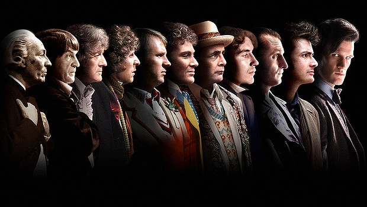

Puedo contar bastantes años en los que había escuchado del doctor de la BBC, amigos me lo recomendaban y cabe decir que me llamaba un poco la atención debido a que disfruto mucho de la ciencia ficción, pero como en ocasiones sucede en la vida, nunca se tiene tiempo para ver o disfrutar de algún programa que curiosamente te emocionara en distintas maneras.
El veinticinco de diciembre se presento el especial de navidad de Dr. Who llamado The Time of the Doctor y tengo que añadir que me quede prendida de ese universo, como menciono jamás había visto un episodio, todo era nuevo y a la vez demasiado familiar y eso es algo que no sé como describir. Al ser un episodio especial me sentí de cierta forma ajena a ese mundo pero feliz porque trataba de la navidad y esa es una época que disfruto mucho desde que leí a Charles Dickens, en el episodio trataron el tema con una belleza que me lleno la mirada de regocijo, más allá del universo fue el concepto lo que me llevo de una profunda alegría a serios caminos de soledad. ¿Cómo explicarlo sin sonar cursi? fue una explosión de emociones para una persona que jamás había observado algún episodio, en poco más de cincuenta minutos reí, llore y sentí en ese momento que me estaba perdiendo de algo importante en la vida de alguien que se dice amar la ciencia ficción.
La serie acaba de cumplir cincuenta años por lo que la mejor forma de felicitándola es seguir viéndola y disfrutar del nuevo doctor que en esta ocasión es el actor Peter Capaldi quien hizo su debut en este último episodio.
